auraPhone 18 Pro
Nueva cámara. Nuevos flechazos.
Una cámara principal de 48 Mpx y zoom de calidad óptica.
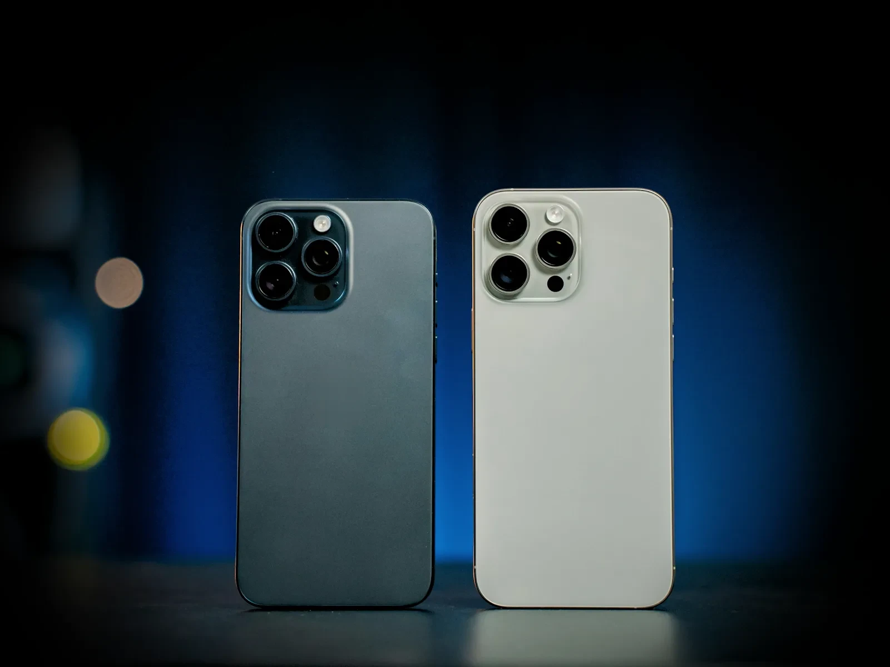
AURA
Sistema visual inmersivo
Una referencia práctica para construir experiencias de tecnología inmersiva con precisión, profundidad y coherencia premium.
01
Los tonos fundamentales que dan vida a la interfaz inmersiva de AURA.
Ampliado en V 2.0
Paleta principal
Oscuridad precisa. Energía controlada.
6 tokens / Dark mode
Fondo Principal
#000000Lienzo principal y contraste máximo.
var(--bg-main)Fondo Secundario
#161617Tarjetas, paneles y agrupación de contenido.
var(--bg-secondary)Acento Azul
#0071e3Acciones, foco y estados interactivos.
var(--accent)Dorado Premium
#e5a93cDistinción, metadatos y acentos selectivos.
var(--gold)Texto Primario
#f5f5f7Títulos y contenido de alta prioridad.
var(--text-primary)Texto Secundario
#a1a1a6Cuerpo, notas y contexto auxiliar.
var(--text-secondary)Franja
#0a0a0bSecciones alternas, casi negras.
--bg-bandElevado
#1d1d1fCapas sobre una tarjeta; popover sólido.
--bg-elevatedPie
#111113Fondo del pie global.
--bg-footerAzul de texto
#2997ffEnlaces, iconos y foco sobre negro (6,96:1).
--accent-linkAcento hover
#0074e8Relleno primario al pasar el ratón (4,5:1 con blanco).
--accent-hoverContorno hover
#1787f7Solo trazos: borde del secundario en hover.
--accent-brightAzul suave
16 %Fondo de lo elegido y tinte del secundario.
--accent-softAnillo de foco
40 %Anillo de los campos en foco (guía §04).
--accent-ringDorado suave
14 %Fondo de insignias e iconos de nota.
--gold-softTexto terciario
#8e8e93Notas, metadatos y etiquetas mono.
--text-tertiaryPlaceholder
#98989dEjemplo dentro del campo (5,7:1 en foco).
--text-placeholderDesactivado
#6e6e73Etiquetas de controles desactivados.
--text-disabledCompletado
#30d158Confirmaciones y requisitos cumplidos.
Entregado
--okAviso
#ffd60aAdvertencias antes de un problema.
En preparación
--warnError
#ff453aValidación, sistema y acciones destructivas.
Cancelado
--errorLíneasSeparan sin pesar
--hairline · 10 % · separadores de lista y tarjeta
--hairline-strong · 18 % · bordes visibles
--edge-light · 16 % · filo superior de un material (la luz lo toca)
--field-border · 36 % · límite de campos y opciones (3,14:1)
RellenosReposo · hover · pulsado
--fill-1
4 %
--fill-2
8 %
--fill-3
12 %
--fill-selected
16 %
Dentro del cristal (hoja, popover, aviso) se usan rellenos planos, nunca otro cristal.
Base / 00
El vacío inmersivo donde vive la experiencia.
Elevación / 01
Agrupa controles sin romper la profundidad.
Cristal / 02
Reserva para foco, capas y controles flotantes.
| Par | Colores | Relación | Uso |
|---|---|---|---|
| Texto primario sobre negro | #f5f5f7 / #000 | 19,29:1 | AAA · titulares y cuerpo principal |
| Texto secundario sobre tarjeta | #a1a1a6 / #161617 | 7,03:1 | AAA · cuerpo y notas (8,16:1 sobre negro) |
| Texto terciario sobre negro | #8e8e93 / #000 | 6,44:1 | AA · metadatos y etiquetas |
| Azul de texto sobre tarjeta | #2997ff / #161617 | 6,00:1 | AA · enlaces (6,96:1 sobre negro) |
| Blanco sobre acento | #fff / #0071e3 | 4,70:1 | AA · etiqueta del botón primario (4,50:1 en hover) |
| Acento como texto | #0071e3 / #000 | 4,47:1 | No llega a AA como texto: solo rellenos y contornos (≥ 3:1) |
| Dorado sobre negro | #e5a93c / #000 | 10,07:1 | AAA · antetítulos y metadatos premium |
| Error sobre negro | #ff453a / #000 | 6,16:1 | AA · mensajes y botón destructivo |
| Borde de campo sobre negro | 36 % / #000 | 3,14:1 | Límite de control ≥ 3:1 |
Nota de uso
El azul eléctrico comunica interacción; el dorado aporta valor premium. Evita usarlos como superficies extensas o competir por la misma jerarquía.
Texto azul sobre negro siempre en --accent-link (#2997ff); --accent (#0071e3) es para rellenos con texto blanco y contornos. Lo que no se pulsa no va en azul, y un estado nunca se comunica solo con color.
02
Una voz tecnológica, nítida y expresiva. Kanit lidera; Inter explica.
Ampliado en V 2.0
Familias tipográficas
Escala editorial para una interfaz cósmica.
Display500—600
Kanit
Titulares, cifras y momentos de marca.
Interface400—700
Inter
Cuerpo, etiquetas y controles de precisión. Con eje óptico (14–32): el dibujo se adapta al tamaño.
Mono · sistemaui-monospace · SF Mono · Consolas
Novedades / 2026
Solo para etiquetas técnicas cortas en mayúsculas («Comparativa / AURA Labs», «AU-2026-000123»). Nunca para leer un párrafo.
Display
.aura-display
Titanio. Tan AURA.
Hero Title (H1)
.aura-h1
AURA
Section Title (H2)
.aura-h2
Increíblemente fino.
Card Title (H3)
.aura-h3
Nuevos flechazos.
Subtitle (H4)
.aura-h4
Diseño ultraligero
Lead
.aura-lead
Diseñadas juntas. Extraordinarias por separado. Esta es la nueva generación AURA.
Body Text
.aura-body
El chip AURA A20 Pro lleva los gráficos y la frecuencia vibracional a un nivel nunca visto en la industria móvil.
Caption
.aura-caption
Precios con IVA incluido. Financiación a 24 meses sin intereses, sujeta a aprobación.
Eyebrow / Badge
.aura-eyebrow · .aura-badge
auraPhone Duo
Novedades / 2026
auraBook Pro
Precio
.aura-price (--sm, --lg)
1.469,00 €
Desde 1.469 €
61,21 €/mes
Mono
.aura-mono
AURA / Signal 01 · AU-2026-000123
| Clase | Tamaño | Interlineado | Tracking | Teléfono (< 768 px) |
|---|---|---|---|---|
.aura-display | 36–72 px | 1,05 | −0,025em | −0,016em · 40 px a 390 |
.aura-h1 | 34–56 px | 1,08 | −0,02em | −0,012em |
.aura-h2 | 28–42 px | 1,14 | −0,015em | −0,01em |
.aura-h3 · .aura-h4 | 22–28 · 20 px | 1,22 · 1,3 | −0,008 · −0,004em | igual |
.aura-lead · .aura-body | 17–21 · 16 px | 1,5 · 1,6 | −0,003em · 0 | 56 / 68 caracteres |
.aura-caption | 13 px | 1,45 | +0,006em | igual |
.aura-eyebrow · --mono | 12 · 11 px | 1,35 | +0,04 · +0,12em | mono en mayúsculas |
Bolsa / 2 artículos
Cabecera de sección, bloque texto + imagen y página de tarea: --mono con punto.
auraPhone Duo
Nombre de producto sobre un titular héroe: --lg (Kanit 18–22, sin punto).
Gama auraPad
Gama sobre el héroe de familia, etiqueta de tarjeta o tesela: --mono --plain.
Comparativa / AURA Labs
Metadato secundario: --muted. Logros y salud: --ok.
Sin palabras huérfanas
Titulares con text-wrap: balance; textos de componente con pretty. En un texto corto de tarjeta, entre las dos últimas palabras.
Pulgadas con Inter
auraPad Pro 13″
El signo ″ (U+2033) se dibuja siempre con Inter (.aura-inch): Kanit y mono lo pintan como comillas.
Texto grande
Todo en rem: con la letra al 150 % las columnas se reparten antes y un titular parte una palabra larga antes que salirse.
Cifras y unidades
Precios con cifras tabulares. Cifra y unidad nunca se separan: «120 Hz», «1 TB», «800 €» (espacio indivisible).
<!-- Fuentes de todas las páginas: Inter con su eje óptico y Kanit 500 / 600 --> <link href="https://fonts.googleapis.com/css2?family=Inter:opsz,wght@14..32,400..700&family=Kanit:wght@500;600&display=swap" rel="stylesheet">
Nota de uso
Usa Kanit para condensar intención y ritmo en titulares. Inter sostiene lecturas largas y controles; conserva una longitud de línea cómoda y contraste alto.
Un solo .aura-display y un solo h1 por página. La clase da el aspecto y la etiqueta el nivel (<h2 class="aura-h3"> es válido). No fijes letter-spacing ni line-height a mano: cada clase trae los de su tamaño.
03
Acciones inequívocas, estados legibles y una sola fuente de energía: el azul AURA.
Ampliado en V 2.0
Componentes interactivos
Cada acción tiene una intensidad.
Botón Primario
Botón Secundario
Tema Claro (Inverso)
Destructivo V 2.0
Fantasma V 2.0
La pulsación es inmediata (100 ms) y se cancela en cuanto gana un arrastre. En carga el botón conserva su aspecto (trabaja, no está desactivado), lleva aria-busy y no deja reenviar el formulario. Los 48 px son un mínimo: con texto grande el botón crece en alto y se parte en líneas equilibradas, nunca más ancho que su contenedor.
Enlace contextual
Acción de baja intensidad dentro del flujo. El «›» lo pone el CSS.
Variantes · V 2.0
--plain sin «›» · --muted gris · button.aura-link como control de 44 px · --control si va solo en un párrafo.
Botón de icono.aura-icon-btn
Nombre siempre en aria-label; el icono, aria-hidden. Pulsado: scale(.92).
Chips.aura-chip
Insignias.aura-badge
Control segmentado.aura-segmented
Una sola pastilla (__thumb) que se desliza con un muelle crítico y se arrastra; con texto grande se reparte en filas (.is-wrapped). Con radios, enlaces o pestañas.
| Acción | Texto | Dónde |
|---|---|---|
| Ir al configurador | «Configurar» · «Reservar» · «Comprar» + nombre | Tarjeta de modelo y tabla (el verbo depende de la disponibilidad) |
| Comprar una familia | «Comprar auraPhone» | Héroe y llamada final de familia (modelo de entrada) |
| Valorar con Trade In | «Valorar mi dispositivo» | Ventajas, Trade In (la cinta conserva «Comprobar valor cuántico») |
| Ir al comparador | «Comparar todos los modelos» | Familias, tablas (el pie y el buscador: «Comparar modelos») |
| Ir a una familia | «Ver auraPhone» · «Ver auraPods» | Bolsa vacía, popover, tarjetas de familia |
| Ver los modelos | «Ver los modelos» | Secundaria del héroe de familia (#modelos) |
| Contacto | «Hablar con un especialista» | Ventajas, soporte |
| Abrir el detalle | «Ver cómo» | Teselas que abren una hoja |
Una primaria por contexto
Héroe, tarjeta, formulario o resumen: una --primary, como mucho una secundaria y enlaces contextuales.
Un solo tamaño
48 / 999 / 24 siempre: no hay --sm. Donde un botón sobra (barra local), el enlace «Comprar ›».
Deshacer antes que confirmar
Lo que se puede deshacer no pide confirmación: se hace y se ofrece «Deshacer» en un aviso.
Destructivo, tras confirmar
--destructive solo para lo irreversible («Eliminar ID de AURA»), dentro de una hoja de confirmación.
Etiquetas en infinitivo
Directas y específicas: «Añadir a la bolsa», nunca «Aceptar», «Enviar» ni «Haz clic aquí».
Objetivos de 44 / 24 px
44 px en táctil y 24 px con ratón como mínimo. Lo hace la base: ninguna página añade reglas propias.
Nota de uso
Mantén una sola acción primaria por contexto. El estado hover aumenta la luminosidad; disabled reduce contraste sin perder la etiqueta.
Desactivado igual en primario, secundario e inverso (relleno --fill-disabled #252528, etiqueta --text-disabled); el destructivo conserva su contorno. Hover del secundario: contorno --accent-bright y tinte azul; del inverso, --inverse-hover #e8e8ed. Los cambios de color son instantáneos.
04
Campos legibles que ganan profundidad y energía únicamente cuando el usuario los activa.
Ampliado en V 2.0
Entrada de datos
Foco visible, profundidad de cristal.
Estado normalBorder / 1px
Estado en reposo
Estado en reposo
Estado focusRing / Blue 40%
Entrada activa · acento azul
Entrada activa · acento azul
Te enviaremos aquí la confirmación del pedido.
label for), nunca solo el placeholder--accent-link, --accent-ring, --field-bg-focus.aura-field__help) y pista a la derecha de la etiquetaaria-describedbyFalta el dominio. Escribe una dirección como nombre@correo.com.
.is-invalid · aria-invalid
.is-valid · al enfocarlo manda el foco
Por ahora solo enviamos a España.
disabled · se explica por qué
| Momento | Qué pasa | Marcado |
|---|---|---|
| Escribiendo por primera vez | No se señala el error (sí el acierto) | .is-valid |
| Al salir del campo o al enviar | Aparece el error junto al campo, en lenguaje llano: qué pasa y cómo arreglarlo | .is-invalid · aria-invalid="true" · texto en .aura-field__error |
| Tras el primer error | Se revalida en cada pulsación | — |
| Envío con errores | El foco va al primer campo inválido y vibra (háptica «error») | .aura-alert--error con role="alert" si hace falta un resumen |
| Campos que no cuentan | Un bloque oculto con hidden (dirección con recogida en tienda) no se valida | hidden · disabled · inert |
Mostrar sin perder el control
El ojo alterna type entre password y text, aria-pressed, el icono (bi-eye ↔ bi-eye-slash) y su nombre («Mostrar la contraseña» ↔ «Ocultar la contraseña»).
Cada requisito se marca mientras se escribe (.is-met) y su texto oculto pasa de «Pendiente:» a «Cumplido:», así el lector de pantalla también lo sabe. La contraseña nunca se guarda: solo su huella SHA-256 con sal.
Acepta las condiciones para continuar.
Orden obligatorio input → caja → etiqueta. La etiqueta envuelve el control (toda la fila se pulsa); la casilla suelta lleva además for + id. El error de una casilla va como hermano de la etiqueta, nunca dentro; el de un grupo, como último hijo de su fieldset.
No hemos podido iniciar sesión
El ID de AURA o la contraseña no coinciden.
Datos guardados
Tu dirección de envío se ha actualizado.
Entrega en 2–3 semanas
Este acabado tiene más demanda de la prevista.
Pedido de demostración
Los pagos son simulados y nunca se guardan datos de tarjeta.
Nota de uso
El efecto cristal aparece al enfocar y no sustituye el borde azul. La etiqueta permanece visible para mantener orientación y accesibilidad.
Valida en línea, al salir del campo, con el mensaje junto a él. Pide solo lo necesario, en el momento en que hace falta, y di junto al pago que nunca se guardan datos de tarjeta. Las reglas van dos veces: en el HTML (required, pattern, minlength) y en AURA.ui.form, con novalidate en el formulario.
05
Bootstrap Icons como único alfabeto visual y una marca que nunca se deforma.
Nuevo en V 2.0
Bootstrap Icons 1.11.3
Iconos que explican. Nunca adornan.
Trazo · aria-hidden
Una sola familia de iconos, de trazo, cargada como fuente (<i class="bi bi-…" aria-hidden="true"></i>). El icono acompaña al texto o al aria-label del botón: para el lector de pantalla siempre es decorativo.
Iconos en línea con el texto a 1em; en botones de icono, 17 px dentro de una caja de 44 px. Nunca por debajo de 16 px.
Característica neutra (--fill-2, 40 px) · dorada solo para valor premium (AuraCare+, Trade In) · AuraCare+ en la bolsa (32 px) · botón de icono (44 px) · icono de nota (36 px, --gold-soft).
Logotipo del sitioimg/aura.png
AURA AURA.aura-brand (28 px) en barra y pie; --lg (36 px) en la tarjeta de acceso. Enlace con aria-label y title «AURA — Volver al inicio».
Señal de la guíaAnillo + punto
AURA
Anillo en el azul AURA y núcleo dorado: la firma de los documentos del sistema y el orbe «AURA / Signal 01». No sustituye al logotipo del sitio.
NombresSiempre así
Nota de uso
Un icono de apoyo dice qué se espera (el sobre en el correo, el candado en la contraseña): nunca es un adorno. Para el lector de pantalla es decorativo (aria-hidden="true") y el nombre lo da el texto o el aria-label del botón. Lo que no se pulsa no va en azul: iconos de característica en neutro, marcas de lista en gris.
06
Profundidad con propósito: cuanto mayor la superficie, más grueso el material.
Nuevo en V 2.0
Profundidad y materiales
Tres niveles. Ningún cristal sobre cristal.
Fino < Regular < Grueso
Base / 00
--bg-main y franja --bg-band: el lienzo de las secciones.
Elevación / 01
.aura-card · #161617 · radio 20.
Elevado
.aura-card--elevated · #1d1d1f + --shadow-2.
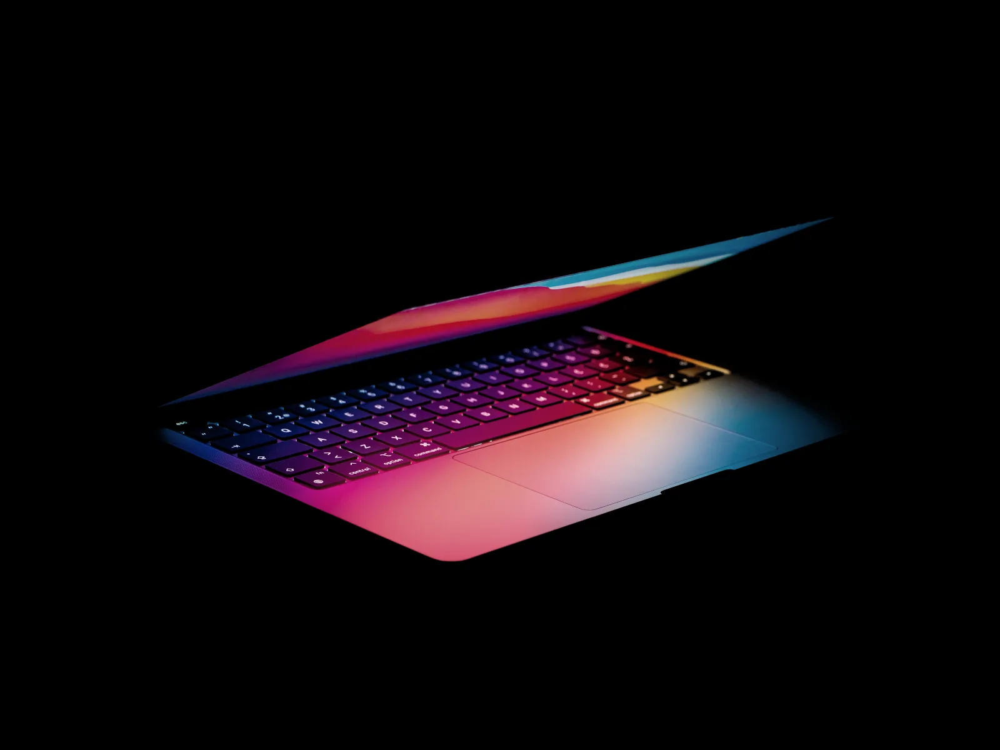
Cristal / 02
.aura-card--glass, solo sobre negro, franja o foto.
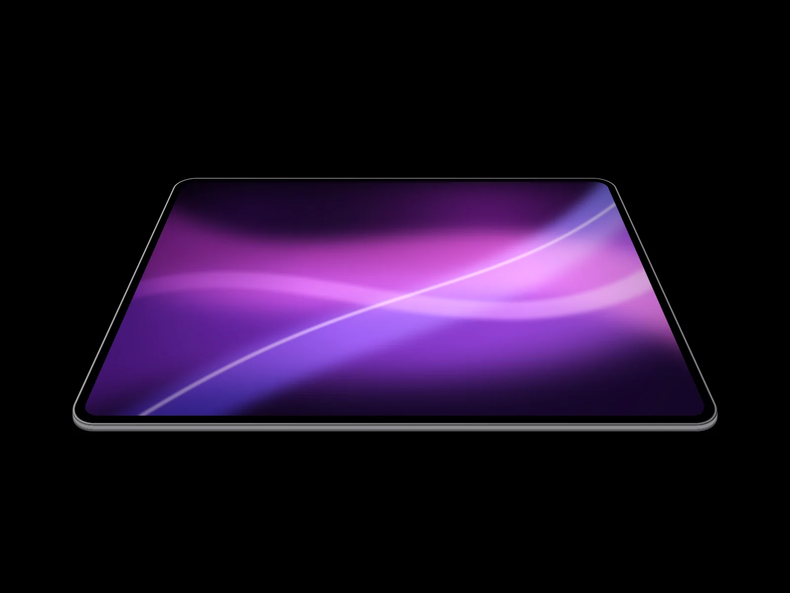
Fino
Avisos
rgba(29, 29, 31, .72) · blur 16 px · saturate 180 %. Avisos y tarjeta de cristal.
Regular
Popover y barras
rgba(22, 22, 23, .74) · blur 24 px. Popover, barra global (negra, .72) y barra local.
Grueso
Hojas y tareas
rgba(22, 22, 23, .88) · blur 40 px. Hoja, buscador, menú y barra de compra.
El texto secundario dentro del cristal no es gris plano: cada material redefine --text-secondary, --text-tertiary y --text-placeholder con vibrancia (--vibrant-label 82 %, --vibrant-secondary 74 %, --vibrant-tertiary 62 % de blanco). Con «menos transparencia» o «más contraste», todos se vuelven opacos.
| Pieza | Material | Velo | Página detrás |
|---|---|---|---|
| Aviso | Fino (sólido si hay una tarea modal abierta) | No | Sigue igual |
| Popover · barra global · barra local | Regular (el de la bolsa, sólido --bg-elevated sobre la barra local) | No | Sigue igual |
| Hoja inferior · buscador | Grueso, sombra --shadow-3 | --scrim 58 % | Retrocede al 96,5 % |
| Cajón lateral · menú móvil | Grueso | Sí | Se bloquea el scroll (html.aura-lock) |
| Barra de compra | Grueso | No (panel paralelo) | Sigue igual |
| Superficie propia de una página | .aura-material (+ --thin, --thick) o .aura-glass-bar | — | Nunca rgba() ni blur() a mano |
--radius-xs 8
Etiquetas, filas
--radius-sm 12
Campos, tabla
--radius-md 16
Opciones, avisos
--radius-lg 20
Tarjetas, teselas
--radius-xl 28
Hojas, buscador
--radius-pill
Botones, chips
.aura-glow (--sm 128 · 256 · --lg 384 px): el orbe «AURA / Signal».
--scrim 58 % (mitad derecha): solo en tareas modales
Bajo lo que flota no hay una línea fija: el borde aparece solo cuando el contenido pasa por debajo (.is-scrolled, .is-stuck) y es el propio material que se desvanece en 1 rem de desenfoque progresivo. Con menos transparencia o más contraste vuelve la línea --hairline.
Nota de uso
El cristal solo vive sobre fondos opacos: dentro de una hoja, un popover o una tarjeta de cristal se usan rellenos planos (--fill-1, --fill-2). Una tarea modal vela y empuja la página hacia atrás; un panel paralelo (popover, aviso, barra de compra) ni vela ni empuja. Lo mismo se ve igual: las cifras sobre una foto van siempre en .aura-media__overlay--glass.
07
Un contenedor, un ritmo de secciones y rejillas que se reparten con el texto.
Nuevo en V 2.0
Contenedor y ritmo
Aire medido. Columnas que respiran.
1180 px / 6 puntos de corte
Normal
1180 px + márgenes laterales clamp(1.25rem, 4vw, 2.5rem), con las zonas seguras del teléfono.
--narrow · 800 px
Preguntas frecuentes, texto legal, buscador y formularios largos.
--wide · 1440 px
Bloques que piden más anchura que el contenido normal.
--bg-main--bg-band #0a0a0b.aura-halo--center--tightCabecera de sección (.aura-section-head): antetítulo, titular y entradilla con 14 px de hueco, máx. 46 rem; --split lleva el enlace a la derecha, en la línea base del último renglón; --center centra. Cada sección, <section aria-labelledby> a su titular.
.aura-grid--2 · desde 36 em (576 px)
.aura-grid--3 · desde 48 em (768 px)
.aura-grid--4 · desde 62 em (992 px)
Texto + imagen
.aura-split (+ --reverse): dos columnas desde 992 px; --wide-media (0,8 / 1,2) desde 1200 px.
Contenido + resumen
.aura-layout--aside: columna de 320–384 px (bolsa, checkout, cuenta); --config: galería + opciones.
Apilar y agrupar
.aura-stack (hueco --stack) y .aura-cluster (fila que envuelve; --stack-sm apila los botones en el teléfono).
| Ancho | Qué cambia |
|---|---|
| 390 px | Teléfono de referencia: una columna, titulares a la mitad (.aura-display 40 px), márgenes de 20 px. Ningún desborde horizontal. |
| < 576 px | Dos o más botones se apilan con el mismo ancho; pasos del checkout solo con el actual; tabla compacta (mín. 544 px). |
| ≥ 576 px | Filas de formulario a dos columnas; avisos a la derecha (se apartan hacia la derecha). |
| ≥ 768 px | La hoja pasa a cajón lateral; la barra local muestra sus enlaces (por debajo, menú con chevrón). |
| ≥ 992 px | Héroe y bloque texto + imagen a dos columnas; barra global con enlaces (por debajo, menú a pantalla completa); resumen pegajoso; sin barra de compra fija. |
| ≥ 1200 px | Etiqueta «Iniciar sesión» visible; --wide-media; las cuatro ventajas en una fila. |
| Token | Valor |
|---|---|
--nav-h | 56 px · barra global |
--localnav-h | 52 px · barra local |
--ribbon-h | alto real de la cinta |
--sticky-top | lo que queda pegado arriba |
--gap | 20 px · rejillas |
| Token | Valor |
|---|---|
--z-localnav · --z-buybar | 1020 · 1025 |
--z-nav | 1030 |
--z-overlay · --z-sheet | 1050 · 1060 |
--z-toast | 1080 |
| Pantalla menos cabecera | calc(100svh − nav − cinta) |
Nota de uso
Alterna secciones negras y franja para dar ritmo; las tarjetas viven sobre cualquiera de los dos. Espaciado en rem y umbrales en em para que todo crezca con el tamaño de letra del usuario, y columnas minmax(0, 1fr) que nunca crecen con una palabra larga. Usa las utilidades de Bootstrap (d-flex, gap-3, mt-4…), nunca sus componentes.
09
Las piezas con las que se cuenta un producto, de la tesela a la tabla.
Nuevo en V 2.0
Piezas para contar un producto
Cada bloque cuenta una sola cosa.
Clases .aura-*
Antetítulo de producto (--lg), titular, entradilla y como mucho dos acciones (secundaria + primaria). La foto se funde con el negro por sus bordes al llegar. La del primer héroe lleva loading="eager" fetchpriority="high"; en el teléfono los botones se apilan con el mismo ancho. Héroe de familia: «Comprar auraX» + «Ver los modelos».
Mampostería alta + baja / baja + alta con .aura-bento__col. En --cover la foto va a sangre con --photo-scrim, el texto en --text-primary y la etiqueta (.aura-tile__tag) en blanco con el punto dorado. __media--blend funde un aparato sobre negro con la tesela; --media-fit alinea las fotos de una fila.
La pinta el catálogo (data.js): antetítulo (badge), nombre al escalón H3, acabado de la foto en azul, puntos de color, lema, precio «Desde» con la cuota y un botón cuyo verbo sale de la disponibilidad. La tarjeta entera responde al pulsar foto o nombre (scale(.985)) y el pie se coloca por el ancho de la tarjeta, igual en toda la fila.
La cifra destacada (--lg, Kanit 48 → 80 px) aparece primero y después lo que la explica, solo con opacidad (data-aura-reveal="stat"): nunca un contador. La gran cifra (--xl) es una caja cuadrada para que su resplandor sea un círculo; en columnas estrechas, --md. Las cifras salen del catálogo.
Solo el nombre del modelo destacado va en dorado (la columna no se tiñe). Precio siempre desde basePrice, con la disponibilidad debajo (.aura-table__note); un dato que falta es «—» a la vista y «Sin dato» al oído. Primera columna fija y desplazable con el teclado; la fila de acciones repite la compra con botones secundarios.
Sigue al dedo 1:1, un golpe mueve una diapositiva y el muelle hereda la velocidad (capítulo 12). Puntos de 24 × 44 px (44 × 44 en táctil); si no caben, contador «3 de 9». Estado anunciado en una región aria-live; ← → Inicio Fin con el teclado. Sin JS es una pista con scroll-snap.
Las muestras salen de data.js; si el acabado tiene foto propia (imageVariants), cambia con un fundido cruzado; si no, se queda la que hay y el nombre lo dice («Plata · Imagen en Azul glacial»). El nombre se anuncia al cambiar. Las cifras sobre una foto, siempre en el mismo panel de cristal.
Acordeón nativo (<details name>): abre y recoge en el acto, solo se anima el icono. Notas al pie al final del <main>, siempre sobre negro: <ol> con «volver» para las que tienen llamada (<sup class="aura-footnote-ref">, nunca en la cifra de un precio) y <ul> con los textos comunes de AURA.legal.
Nota de uso
Lo que se repite sale de la base y del catálogo: tarjetas de modelo (data-aura-lineup), tabla (data-aura-compare), ventajas (data-aura-perks), «Desde…» (data-aura-from) y «Comprar auraX» (data-aura-buy). Nunca se copia su marcado a mano ni se escribe un precio, una fecha o un tope en el HTML.
10
Del configurador al pedido: cada control junto a lo que cambia.
Nuevo en V 2.0
Configurar · revisar · comprar
El precio responde al instante.
AURA Store
Muestra elegida con anillo azul (por :checked, sin JS); tarjetas-opción con estados de :checked, :disabled y :focus-visible (desactivada: borde discontinuo y la nota que lo explica, legible); cantidad con «−» desactivado en 1. El precio y la cuota salen de AURA.catalog.price(); la foto cambia con un fundido cruzado y, si el color no tiene foto propia, se dice («Imagen en Plata · Tu acabado: Medianoche»).
| Hoy | Estado | Texto | ¿Se añade a la bolsa? | Botón |
|---|---|---|---|---|
| Antes de la reserva | Próximamente | «Próximamente · Reserva a partir del 16 de octubre» | No (se configura) | Configurar |
| En reserva | Reserva | «Reserva · Entregas a partir del 23 de octubre» | Sí, se entrega ese día | Reservar |
| Desde el lanzamiento | Disponible | — | Sí | Comprar |
Las fechas viven en data.js (availability.preorder / release) y se escriben con <time datetime>. Para probar otro día, ?hoy=AAAA-MM-DD en la URL (se conserva entre páginas).
Eliminar no pide confirmación: se quita y se ofrece «Deshacer» en un aviso. AuraCare+ va en su fila (.is-on cuando está incluido). El resumen es pegajoso desde 992 px y su botón es la misma primaria que la barra de compra del teléfono. Descuentos con el signo menos tipográfico (−) y espacio indivisible antes de «€».
Paso completado con marca y «(completado)» para el lector; actual con aria-current="step". En el teléfono solo se lee el paso actual. La barra de compra (material grueso) solo aparece por debajo de 992 px y se esconde mientras el botón principal está a la vista.
Siempre las cuatro y en el mismo orden (inicio y cada familia): una columna, 2 × 2 desde 576 px y cuatro en fila desde 1200 px. En una familia, la cuota del modelo de entrada y el «hasta» de Trade In de esa familia.
Nota de uso
Precios, cuotas, fechas, topes y estados salen siempre del catálogo (AURA.catalog, AURA.tradeIn, AURA.fmt). Lo simulado (el pago) no se hace esperar: ningún temporizador entre el toque y la confirmación, y se dice que es una demostración. Nunca se guardan datos de tarjeta: como mucho, los cuatro últimos dígitos.
11
Capas que llegan de donde las llamas y cuatro formas de responder.
Nuevo en V 2.0
Capas y respuesta
Llegan de donde las llamas.
Se materializan
Hoja inferior con tirador por debajo de 768 px y cajón lateral desde 768 px; se arrastra 1:1 desde el tirador o la cabecera, vela, atrapa el foco, deja la página inert y se cierra con Esc, el velo o el aspa. El destructivo vive aquí, en la confirmación de lo irreversible, siempre con una salida («Cancelar»).
| Tipo | Rol | Se cierra |
|---|---|---|
| ● Estado | status · polite | 5 s |
| ● Completado | status · polite | 5 s (8 s con acción) |
| ● Aviso | alert · assertive | 8 s con «Deshacer» |
| ● Error | alert · assertive | Nunca solo |
Material fino (sólido si hay una tarea modal abierta). Máximo tres a la vez. Llegan desde arriba materializándose (escala, desenfoque de 6 px y opacidad), los demás se deslizan a su sitio (FLIP, 320 ms) y se apartan con el dedo: hacia arriba en el teléfono, a la derecha desde 576 px. El temporizador se pausa con el puntero encima o el foco dentro.
Junto al campo
Errores de validación en .aura-field__error, con icono, al salir del campo.
En el formulario
El resumen de un envío fallido en .aura-alert (role="alert").
En un aviso
Lo que acaba de pasar y se puede deshacer o seguir («Ver bolsa», «Deshacer»).
En la propia pieza
Estados duraderos con insignia (.aura-badge--mono: «Entregado») o la fila de disponibilidad.
HápticaAURA.ui.haptic()
Solo en pantallas táctiles, en el mismo instante que lo visual y nunca en carrusel, hoja ni navegación. Nunca sustituye al mensaje.
Nota de uso
Velo solo en tareas modales (hoja, buscador, menú): el popover y los avisos no bloquean. Todo entra y sale por el mismo camino, desde su disparador, y se materializa (escala + desenfoque + opacidad), no solo se funde. Al cerrar, el foco vuelve a quien lo abrió. Nunca cristal sobre cristal.
12
Física, no animación: respuesta inmediata, muelles e inercia.
Nuevo en V 2.0
Skill apple-design
Se mueve contigo, no después de ti.
Damping / Response
Respuesta en la pulsación
En pointerdown, no al soltar: botones, chips y opciones escalan (scale(.97) en 100 ms); enlaces y filas se atenúan al instante. Se apaga si el puntero se aleja más de 10 px y se cancela en cuanto gana un arrastre.
Seguimiento 1:1
Lo que se arrastra (carrusel, hoja, pastilla, aviso) va pegado al dedo desde el punto de agarre, tras 10 px de umbral para decidir la dirección.
Interrumpible
Todo se puede volver a coger en pleno vuelo: un nuevo objetivo cambia el destino del mismo muelle y conserva su velocidad. Nunca se bloquea la entrada.
Herencia de velocidad
Al soltar, el muelle arranca a la velocidad del dedo (medida con la hora de cada evento), sin costura entre arrastre y animación.
Proyección e impulso
El destino es a donde iba el gesto, no donde se soltó. Con impulso (> 200–220 px/s) decide el signo de la velocidad; un golpe de carrusel mueve una sola diapositiva.
Consistencia espacial
Entra y sale por el mismo camino, desde quien lo abrió (transform-origin del disparador), con la curva de salida espejada.
Segmentado y por defecto
Pastilla que se desliza (X e Y independientes); valor por defecto de AURA.ui.spring.
Hoja con botón, velo o Esc
Un botón no da impulso: abrir y cerrar sin rebote.
Hoja soltada con impulso
El rebote solo cuando el gesto lo trae (valores de la skill para cajones).
Carrusel con impulso
Response 0,4, que se alarga hasta 0,6 si el muelle fuera más de 1,5 veces más rápido que el dedo.
Carrusel sin impulso, flechas y teclado
Va al punto más cercano a donde iba; mover o recolocar (skill: 1 / 0,4).
Con «reducir movimiento»
Sin muelles ni escalas: un fundido corto desde donde esté. La hoja se sigue arrastrando 1:1.
AURA.ui.spring({ damping, response }): rigidez (2π/response)², amortiguación 4π·damping/response y masa 1, resueltas analíticamente en cada fotograma (sin error de integración). response no es una duración: el tiempo de asentamiento sale de los dos parámetros.
Hasta dónde llegaría
project(v, d) = (v / 1000) · d / (1 − d). 0,998 como el desplazamiento normal; 0,99 ágil, para lo que encaja por puntos (carrusel, segmentado).
Resistencia en los bordes
rubberband(x, dim, 0,55) = x · dim · c / (dim + c · |x|): cuanto más se pasa, menos sigue al dedo. Nunca un tope seco.
--ease-out · entrada
--ease-in · salida
| Token | Uso |
|---|---|
--dur-press 100 ms | Pulsación |
--dur-1 160 ms | Halo, «›» del enlace |
--dur-2 240 ms | Foto que llega, tarjetas |
--dur-3 560 ms | Apariciones |
| Pieza | Quién | Cómo |
|---|---|---|
| Pulsación | CSS | transform: scale() en 100 ms; enlaces y filas, opacity o --fill-3 al instante |
| Popover, aviso, buscador, menú | CSS | opacity + transform + filter: se materializan desde su disparador |
| Carrusel, hoja, pastilla del segmentado | JS | Muelles sobre transform; el CSS solo define los estados de reposo, nunca una transición que compita |
| Aviso arrastrado y apilado | JS | Muelle al apartarlo; los demás, FLIP con translate (320 ms) |
| Página que retrocede | JS | scale de <main>, pie y barras ligado al muelle de la hoja (hasta el 96,5 %) |
| Galería, exhibición de color, foto que llega | CSS | Fundido cruzado de 200 ms; foto de .is-pending a .is-loaded en 240 ms |
| Escena con scroll | JS | 1:1 con el scroll en cada requestAnimationFrame; sin transición ni muelle (capítulo 13) |
data-aura-reveal
Opacidad y un desplazamiento corto. Escalonado con style="--i:1" (80 ms por unidad).
="fade" · ="scale"
Solo opacidad · escala .96 → 1 (imágenes).
="stat"
La cifra y después lo que la explica (120 ms entre partes), solo con opacidad.
Seguro
Umbral 0,15. Sin JS se ve todo a los 2,5 s; al imprimir, todo visible. Nunca en el titular del primer pantallazo.
Reducir movimiento
prefers-reduced-motion: fundidos de 200 ms, sin escalas ni muelles, la página no retrocede y la escena con scroll es una imagen fija.
Reducir transparencia
prefers-reduced-transparency: materiales opacos, sin desenfoque; vuelve la línea bajo las barras.
Más contraste
prefers-contrast: more: fondos sólidos, bordes definidos, vibrancia opaca y foco de 3 px.
Colores forzados
Modo de alto contraste de Windows: sin degradados de protección ni «aclarar» en las fotos.
Nota de uso
Solo se animan transform y opacity (y filter al materializar cristal); los cambios de color son instantáneos. Rebote (0,8) solo cuando el gesto llevaba impulso; lo demás, amortiguación crítica (1,0). Sin bucles lentos, sin fondos en movimiento ni parallax: la única excepción es la escena con scroll, que nunca se mueve sola. Sin retardos artificiales en el camino de la entrada.
13
Un vídeo convertido en fotogramas que avanza solo cuando tú avanzas.
Nuevo en V 2.0
Scroll 1:1
Tú marcas el ritmo.
≤ 120 fotogramas / ≤ 4 MB
La escena se queda pegada a la pantalla mientras su sección pasa por debajo y pinta en un <canvas> el fotograma que corresponde al desplazamiento: si te paras, se para contigo. Encima, textos HTML reales que entran desde abajo y se van hacia arriba por tramos. Es la única pieza del sitio que se mueve con el scroll.
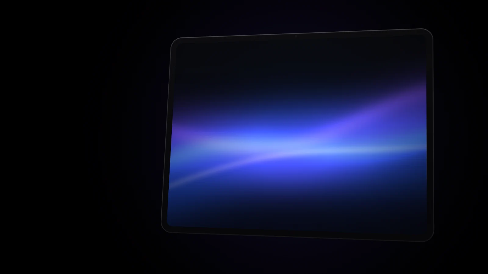
.aura-eyebrow, .aura-h1 / .aura-h2, .aura-lead, .aura-body), con el apoyo en --text-primary: sobre una imagen que cambia, nunca un gris. Se coloca en una zona tranquila de sus fotogramas (zonasTranquilas de seq.json).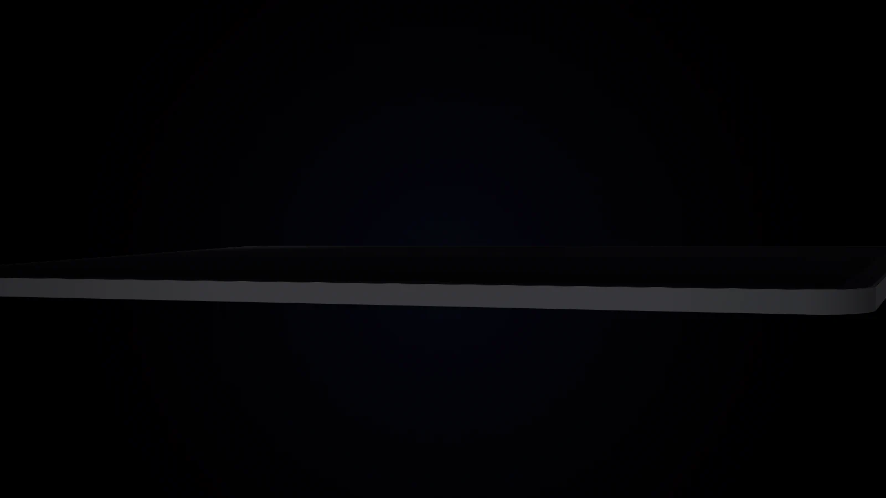
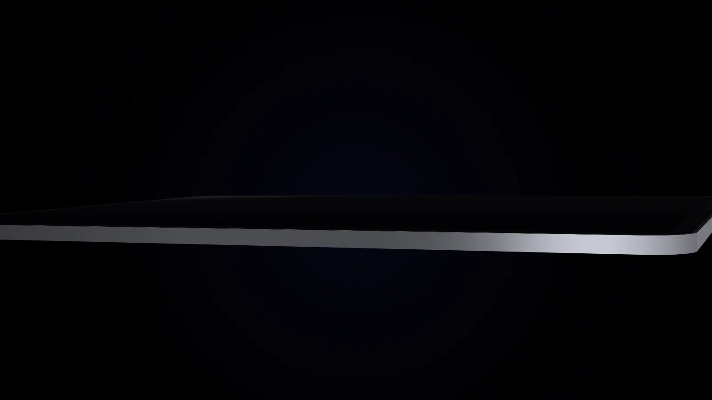
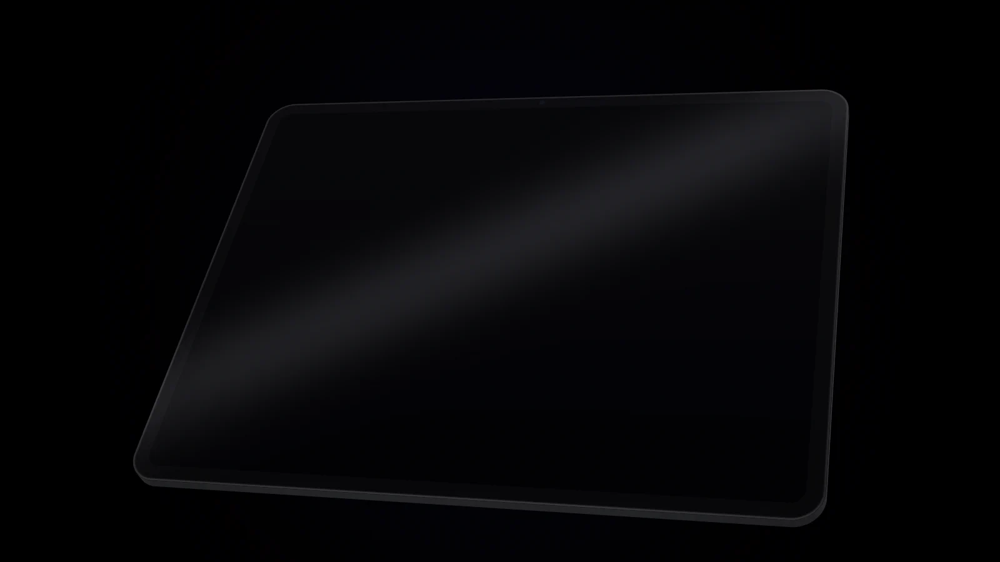
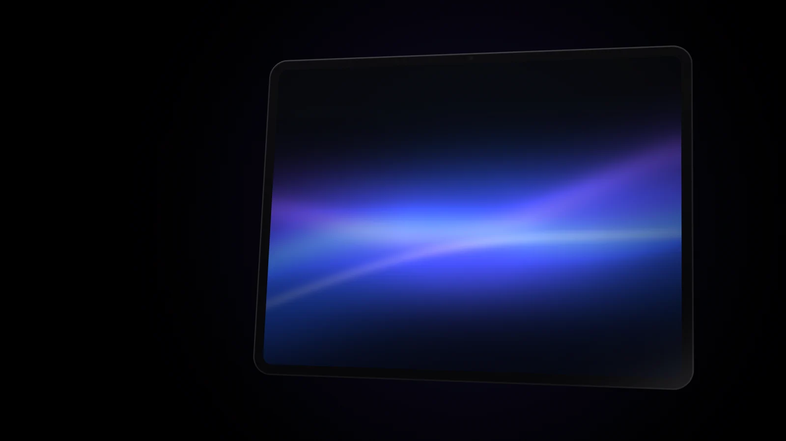
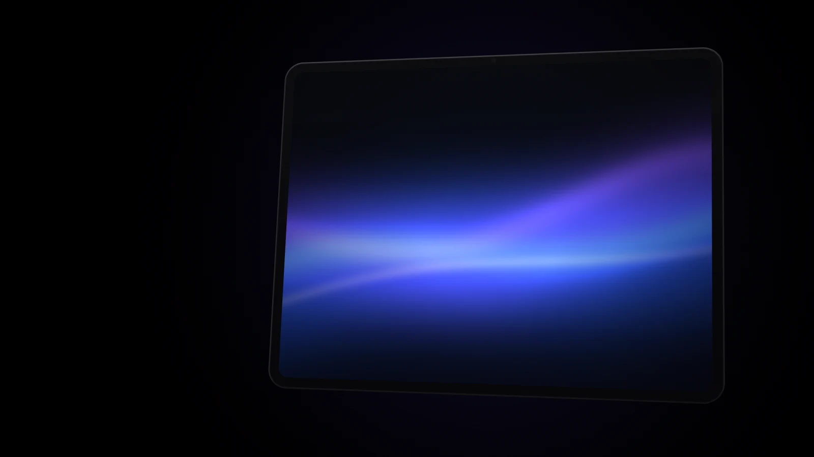
Texto 1 centrado (data-pos="center"), texto 2 a la izquierda (left) y texto 3 a la derecha (right). Cada texto entra en el primer tercio de su tramo (data-from) y se va en el último (data-to): opacidad 0 → 1 subiendo 40 px y 1 → 0 subiendo otros 40 px. Los tramos no se solapan para que un texto se vaya antes de que llegue el siguiente.
1:1 con el scroll
En cada requestAnimationFrame: progreso = −top / (alto − alto del escenario) y fotograma = round(progreso × (n − 1)). Sin inercia, sin suavizado, sin temporizadores; solo repinta si cambia el fotograma.
Carga progresiva
Empieza a pantalla y media: primero el fotograma 1, uno de cada 8 y el último; el resto, tras el load de la página, con prioridad baja y como mucho 4 a la vez. Si falta el exacto, se pinta el más cercano.
Lienzo nítido
Tamaño del escenario × devicePixelRatio (máx. 2), recorte cover o contain con el punto de data-focus. Aparece sobre el póster con un fundido de 240 ms.
| Atributo | Qué hace |
|---|---|
data-seq | Carpeta: ../img/seq/NOMBRE |
data-frames | Número de fotogramas (f-0001.webp…) |
data-length | Alto en % de pantalla (300 = dos pantallas de scroll) |
data-fit · data-focus | cover o contain · punto que manda |
data-mobile | Usa m/ por debajo de 768 px |
| Escena | Escritorio | Teléfono |
|---|---|---|
| Límite | 1600 × 900 · ≤ 4 MB | 750 × 1100 · ≤ 2 MB |
| auraPhone | 120 · 3,34 MB | 1,01 MB |
| auraPad | 120 · 1,23 MB | 0,46 MB |
| auraBook | 120 · 1,66 MB | 1,08 MB |
| Prueba (guía viva) | 48 · 0,51 MB | 0,26 MB |
Un tramo continuo del vídeo (sin cortes), de 3 a 8 s; WebP calidad 60–70; 96 fotogramas bastan para 3–5 s (data-length 300–400) y 120 para recorridos de 6–8 s. Más fotogramas no se notan y pesan. seq.json describe qué se ve en cada tramo, sus zonas tranquilas y el fotograma estático recomendado.
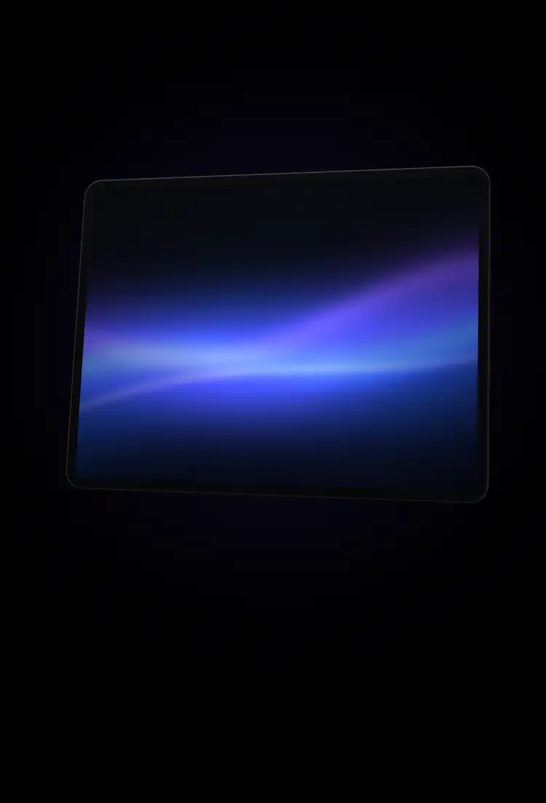
m/; si no existen, vuelve a los de escritorio. left y right bajan al pie.Sin escena, el mismo contenido
Con «reducir movimiento», «ahorro de datos», al imprimir, sin JS o sin <canvas>, la escena es una imagen fija: el póster queda en el flujo, fundido con el negro, y los textos se leen debajo, uno tras otro. No se descarga ningún fotograma. Si el usuario cambia la preferencia con la página abierta, cambia en el acto.
<picture> <!-- fotograma 1 para la escena; el último para la versión estática --> <source media="(prefers-reduced-motion: reduce)" srcset="…/f-0120.webp"> <source media="(max-width: 767.98px)" srcset="…/m/poster.webp"> <img class="aura-scrub__poster" src="…/poster.webp" alt="Lo que se ve de verdad"> </picture> <canvas class="aura-scrub__canvas" aria-hidden="true"></canvas>
Nota de uso
Como mucho una o dos por página y nunca dos seguidas; a sangre, hija de <main>, justo tras el héroe o como héroe (entonces su primer texto lleva el h1). Comprueba: sección con aria-labelledby, jerarquía sin saltos, póster con width, height y alt real, lienzo aria-hidden, tramos sin solapar, versión estática revisada, sin desborde a 390 px, peso dentro del límite y crédito del vídeo si es de terceros.
14
Producto sobre negro, fiel al modelo y con su crédito.
Nuevo en V 2.0
Dirección de arte
Producto sobre negro. Luz con intención.
WebP / Fondo #000
Una foto por producto basta (product.image); su acabado va en imageColor y su descripción en imageAlt. Las fotos por color (-azul-cielo) solo se piden si están declaradas en imageVariants. Sobre su panel se funden con «aclarar» (mix-blend-mode: lighten): nunca un rectángulo negro dentro de otro.
Sí
Fondo negro puro
Todo el sitio es #000: las fotos se diseñan o recortan para fondo oscuro y se funden con el negro por sus bordes.
Sí
Fiel al modelo
La foto enseña el modelo y el acabado reales; si el color elegido no tiene foto, se dice: «Imagen en Azul glacial · Tu acabado: Negro».
Sí
Alt de lo que se ve
Describe la foto real («Trasera azul del auraPad Air 13″…»), no lo que anuncia el texto; alt="" si es decorativa o la acompaña un nombre enlazado.
No
Logotipos de otras marcas
Fotos retocadas sin logotipos, marcas reconocibles ni textos de pantalla en inglés. Nunca la marca original ni sus productos.
No
Marcos y recortes a mano
Sin marco alrededor de una foto real en héroes ni bloques texto + imagen. El encuadre, con --photo-focus o .aura-photo-top / -bottom / -left / -right, nunca object-position.
No
Imágenes sin licencia
Solo licencias libres (Wikimedia Commons, Unsplash, Pexels) o render propio, con autor, fuente y licencia en legal.html#imagenes.
| Uso | Tamaño | Proporción | Dónde |
|---|---|---|---|
| Producto (tarjeta, configurador, bolsa) | 1600 × 1200 | 4:3 | img/<producto>.webp · -<color>.webp |
| Héroe dividido, teselas, texto + imagen | 1600 × 1200 | 4:3 | img/<página>-<bloque>.webp |
| Héroe centrado, panorámica | 1920 × 1080 | 16:9 | aurapad-hero.webp… |
| Miniatura suelta | 800 × 800 | 1:1 | — |
| Redes sociales (Open Graph) | 1200 × 630 | 1,91:1 | img/og/og-*.jpg (URL absoluta) |
| Escena con scroll | 1600 × 900 · 750 × 1100 | 16:9 · vertical | img/seq/<nombre>/ y m/ |
| Iconos del sitio | 512 · 192 · 180 | 1:1 | aura.png, icon-192.png, apple-touch-icon.png |
WebP primero; si falta, el hueco prueba .png, .jpg, data-fallback y, al final, un marcador con la ruta y el tamaño recomendado. Nombres en minúsculas con guiones. Siempre width y height (sin saltos al cargar) y loading="lazy" decoding="async", salvo la del primer héroe (fetchpriority="high").
Al llegar
Oculta mientras carga (.is-pending) y fundido de opacidad de 240 ms al decodificarse (.is-loaded), sin desplazamiento; sin fundido si ya estaba en caché o con «reducir movimiento». Texto sobre foto: degradado estático --photo-scrim.
og:image con su og:image:alt).Nota de uso
Para sustituir una foto, guarda la nueva con exactamente el mismo nombre y la misma proporción, actualiza su alt (y imageAlt / imageColor en data.js si es de producto) y su crédito en js/creditos.js. En JS, los nombres salen siempre de AURA.catalog.image(producto, color): nunca se escriben a mano.
15
La lista que cumple cada página antes de publicarse (temario de DIW).
Nuevo en V 2.0
Temario DIW
Para todas las personas, en cualquier pantalla.
WCAG 2.2 AA
<html lang="es" data-bs-theme="dark"> <!-- Técnica: codificación y ventana adaptable --> <meta charset="utf-8"> <meta name="viewport" content="width=device-width, initial-scale=1, viewport-fit=cover"> <!-- SEO: título de 40–65 caracteres «… — AURA», descripción de 120–160, autoría, palabras clave, indexación y canónica --> <title>auraPhone: modelos, precios y especificaciones — AURA</title> <meta name="description" content="…"> <meta name="author" …> <meta name="keywords" …> <meta name="robots" content="index, follow"> <link rel="canonical" href="https://…/html/auraphone.html"> <!-- Redes: Open Graph y tarjeta de X, con URL e imagen absolutas (img/og/, 1200 × 630) --> <meta property="og:title" …> <meta property="og:image" …> <meta property="og:image:alt" …> <meta name="twitter:card" content="summary_large_image"> <!-- Identidad: color del navegador, favicon e icono de acceso directo --> <meta name="theme-color" content="#000000"> <link rel="icon" …> <link rel="apple-touch-icon" …> <!-- Estilos (fuentes, Bootstrap 5.3, iconos, aura.css, hoja de la página) y scripts síncronos: data.js y aura-core.js -->
noindex, follow en las páginas que no deben salir en un buscador: bolsa, tramitar pedido, cuenta, inicio de sesión, registro, la guía viva y esta guía. Si el JS cambia lo que muestra la página (?familia=, ?producto=), actualiza document.title con las mismas reglas. Ni en el título ni en los metadatos aparece la marca original.
Estructura
<main id="contenido">h1 y jerarquía sin saltossection con aria-labelledby; article y aside con sentidoul, ol y dl según su significadonav con su nombreEnlaces e imágenes
aria-label lo completatitle solo si añade informacióntarget="_blank" rel="noopener noreferrer"alt real, width y height; figure + figcaptionaria-hiddenTablas
<caption> (oculto con visually-hidden si ya hay título)thead / tbody y th con scopeFormularios
<label for> visible; el placeholder es un ejemplofieldset + legend (o role="radiogroup")type, name y autocomplete correctosrequired, pattern, minlength… y novalidatearia-describedby, aria-invalid, icono y textoARIA y estados
aria-label en botones de icono, aria-controls en disparadoresaria-expanded, aria-current, aria-pressed, aria-busy al díarole="status" / aria-live para cambios; role="alert" para erroreshidden para lo que no aplicaTeclado y foco
<button> o <a href>tabindex solo 0 (zonas desplazables) o −1; nunca mayoroutline: none sin sustituto)Botones, segmentado, puntos del carrusel, migas, enlaces del pie, llamadas a nota y enlaces sueltos miden 44 px en pantallas táctiles (pointer: coarse) y nunca menos de 24 px con ratón.
Contraste AA
Texto ≥ 4,5:1 (≥ 3:1 si es grande) y controles ≥ 3:1, con los tokens del capítulo 01. Texto azul siempre --accent-link. Estados distintos y visibles: hover, foco, pulsado, desactivado (legible) y error (icono + texto).
Lighthouse
Accesibilidad, buenas prácticas y SEO en Edge o Chrome; panel de accesibilidad de DevTools para el nombre de cada control.
Teclado
Tab y Mayús + Tab; Intro, Espacio y Esc para abrir y cerrar, sin quedarse atrapado.
Lector de pantalla
NVDA: encabezados, regiones, enlaces y tablas, cada uno con su nombre.
Validadores
W3C para el HTML, comprobador de contraste y una vista previa del enlace para Open Graph. Sin desborde a 390 px.
Nota de uso
Lo que pintan aura-core.js y aura-ui.js (cabecera, menú, pie, migas, tablas, avisos, hojas) ya cumple: cada página responde de su propio marcado. Se respetan «reducir movimiento», «reducir transparencia», «más contraste» y los colores forzados, y ninguna página los anula.
16
Titulares cortos, verbos claros y un guiño de marca con mesura.
Nuevo en V 2.0
Cómo habla AURA
Titulares cortos. Verbos claros.
Español de España
Rotundo
Dos frases cortas con punto mejor que una larga: «Fino a más no poder. Potente a más no caber.» El titular dice una idea; la entradilla, el dato.
Cercano y de España
Tuteo, «móvil», «ordenador», comillas angulares «», separador de miles con punto y decimales con coma. Sin anglicismos que tengan traducción.
Específico
Etiquetas en infinitivo que dicen lo que pasa («Añadir a la bolsa», «Valorar mi dispositivo») y la misma acción con el mismo nombre en todo el sitio.
Parodia con mesura
El guiño («mundano», «valor cuántico», «frecuencia vibracional») solo donde lo pone el prototipo: la cinta y el héroe de inicio, y como mucho una vez en Acerca y en un puesto de empleo.
Llano en la tarea
Compra, cuenta, soporte, legal y empresa en texto llano: «¿Cuánto vale tu dispositivo actual?», «¿No te convence? Devuélvelo gratis…».
Honesto
Si algo es simulado, se dice: nada de «cifrado de extremo a extremo» ni «te respondemos en 24 horas». Errores que explican qué pasa y cómo arreglarlo.
Titular
Se pliega. Pero no ante nadie.
No
El nuevo auraPhone Duo es un teléfono plegable con muchas funciones.
Error de formulario
Falta el dominio. Escribe una dirección como nombre@correo.com.
No
Error: formato no válido.
Llamada a la acción
Comprar auraPods · Ver los modelos
No
Haz clic aquí · Más · Aceptar
Tarea (Trade In)
¿Cuánto vale tu dispositivo actual?
No
Descubre la frecuencia cuántica de tu terminal mundano.
| Dato | Así | Función | Detalle |
|---|---|---|---|
| Precio | 1.469,00 € | fmt.eur | Espacio indivisible antes de «€» |
| Precio «desde» | Desde 1.469 € | fmt.eur0 | Sin decimales si es entero |
| Cuota | 61,21 €/mes durante 24 meses | fmt.mes | Precio ÷ financing.months |
| Descuento | − 600,00 € | '− ' + fmt.eur() | Signo menos tipográfico (−), no un guion |
| Fecha | 16 de octubre de 2026 · 23 de octubre | fmt.fecha · fmt.diaMes · fmt.dia | Sin el año si es el actual; <time datetime> |
| Cifra y unidad | 120 Hz · 1 TB · 0 % TAE | fmt.units | Nunca se separan al cambiar de línea |
| Pulgadas | auraBook Pro 16″ | U+2033 | Dibujada con Inter |
| Cantidades y pedidos | 2 artículos · AU-2026-000123 | fmt.articulos | Singular y plural correctos |
| Título de página | auraPods: modelos, precios y… — AURA | <title> | 40–65 caracteres, termina en « — AURA» |
Nota de uso
La marca es siempre AURA y sus nombres propios (auraPhone, auraPad, auraBook, auraPods, auraOS, AuraCare+, AURA Trade In, ID de AURA); nunca la marca original ni sus productos. «auraPods» va en plural en las frases («los auraPods», «tus nuevos auraPods»): los textos generados concuerdan solos. Fechas, precios, topes y estados de disponibilidad salen del catálogo, y ningún enlace queda muerto.
17
Cuatro familias de producto y la estructura de cada tipo de página.
Nuevo en V 2.0
Gama y páginas
Cuatro familias. Una misma estructura.
4 familias / 16 páginas
| Familia | Modelos | Desde | Sistema | Icono | AuraCare+ · Trade In |
|---|---|---|---|---|---|
| auraPhone | auraPhone Duo · 18 Pro Max · 18 Pro | 1.469 € | auraOS 27 | phone | 229 € · hasta 800 € |
| auraPad | auraPad Pro 13″ · Pro 11″ · Air 13″ | 999 € | auraPadOS 27 | tablet-landscape | 149 € · hasta 640 € |
| auraBook | auraBook Pro 16″ · Pro 14″ · Air 15″ | 1.729 € | auraOS 27 | laptop | 399 € · hasta 800 € |
| auraPods Nuevo | auraPods Max 2 · Pro 3 · auraPods 5 | 149 € | auraOS 27 (con un auraPhone, auraPad o auraBook) | earbuds | 59 € · hasta 150 € |
Cada familia tiene exactamente tres modelos; el primero (rank 1) es la columna destacada de su tabla y el más asequible que ya se puede comprar es el modelo de entrada (precio «Desde» y destino de «Comprar auraX»). auraPods se nombra en plural (family.plural) y no tiene opciones salvo el estuche de los auraPods 5.
.aura-localnav.aura-display, «Desde…», «Comprar auraX» + «Ver los modelos».aura-hero.aura-scrub.aura-bento.aura-split.aura-stats--lg.aura-colorway[data-aura-lineup][data-aura-compare][data-aura-perks]--center + .aura-halo.aura-footnotesLo que no cambia
Secciones alternas negro / franja, cada una con su id para la barra local y aria-labelledby; un solo h1 (el del héroe o el primer texto de la escena); acciones con los textos del glosario; precios y fechas desde el catálogo; notas al pie al final del <main>; migas «AURA › auraX» en el pie.
Lo que cambia por familia
auraPhone: héroe centrado y escena tras él. auraPad: héroe y escena «Una lámina de luz». auraBook: la escena es el héroe. auraPods: la misma estructura, con la foto de cada modelo y su tabla (cancelación, autonomía, estuche, salud).
Esqueleto de toda página
aura-skip → <aura-header active="…"> → <main id="contenido"> → <aura-footer crumbs="…">. En el <head>, data.js y aura-core.js síncronos; al final, Bootstrap, aura-ui.js y el JS de la página. Clases con el prefijo aura- o el de la página.
Comprar
comprar.html?producto=ID · has-buybar
--configfieldset.aura-summary.aura-buybar--bandBolsa
bolsa.html · estado vacío con tarjetas de familia
.aura-bag-list__care--aside--bandTramitar pedido
checkout.html · cuatro pasos con su título
.aura-stepshiddenAURA.ui.form.aura-sheet--compactIniciar sesión y crear cuenta
<main class="aura-auth"> con .aura-auth-card (520 px; 560 px con --wide en el registro), un h1 en la tarjeta; el registro, con la contraseña y sus requisitos; el acceso, con «Mantener la sesión iniciada» y una hoja para recuperar el ID.
Tu cuenta
--centerrole="tablist".aura-sheet404
«No encontramos esta página.» centrado, con «Ir al inicio» (primaria), «Pedir ayuda en Soporte» y enlaces «Ver auraX» a las familias.
Inicio
Tres héroes alternos (el primero con el h1), novedades en bento, «Toda la gama» en carrusel, ventajas, Acerca con cifras sobre foto, Trade In y notas.
Comparar
Segmentado de familia (?familia=), cabeceras de modelo en una barra de cristal flotante (.aura-glass-bar), tabla línea a línea con «Mostrar solo las diferencias» y «¿Ya tienes favorito?».
Trade In
Héroe con la cifra máxima, calculadora con segmentado de familia, dispositivo y estado (radios con su descripción) y resultado en .aura-stat--md; cómo funciona, planeta, preguntas y «¿Qué vas a estrenar?».
Acerca de AURA
Historia con cronología, cita del fundador, valores, newsroom en tarjetas y oportunidades de empleo, con barra local.
Soporte
Héroe con buscador, temas en tarjetas enlace, respuestas rápidas en acordeón y formulario de contacto con la tienda al lado; barra local con «Contactar ›».
Legal
Privacidad, cookies y condiciones en .aura-prose, tus datos con el destructivo «Borrar todos los datos» y los créditos de cada imagen.
Nota de uso
Una página nueva parte de la plantilla de su tipo y de la lista del capítulo 15. Lo que parece igual se comporta igual y está en el mismo sitio en todas las páginas; una familia nueva (como auraPods) solo necesita su entrada en data.js, sus fotos y su página con la misma estructura: tarjetas, tabla, ventajas, buscador, bolsa y cinta se ponen al día solos.